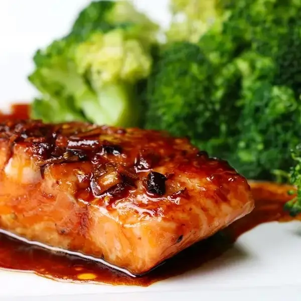

Honey Soy-Glazed Salmon Recipe

Description
A delightful mix of honey, soy sauce, garlic, and ginger envelops the salmon, infusing it with rich flavors in just 30 minutes.
Ingredients
- 12 oz skinless salmon
- 1 tbsp olive oil
- Honey Soy Marinade
- 4 cloves garlic, minced
- 2 tsp ginger, minced
- 1/2 tsp red pepper
- 1 tbsp olive oil
- 1 tbsp olive oil
- 1/3 cup less sodium soy sauce
- 1/3 cup honey
Steps
- Place the salmon in a sealable bag or medium bowl.
- In a small bowl or measuring cup, mix marinade ingredients.
- Pour half of the marinade over the salmon. Save the remaining marinade for later.
- Let the salmon marinate in the refregerator for at least 30 minutes
- In a medium pan, heat the oil. Add the salmon to the pan and discard the used marinade. Cook the salmon on one side for about 2-3 minutes, then flip over and cook for an additional 1-2 minutes.
- Remove the salmon from the pan. Pour in the remaining marinade and reduce to a sauce-like consistency.
- Serve the salmon with the sauce and a side of veggies. We used broccoli.
- Enjoy!
Back to all recipes